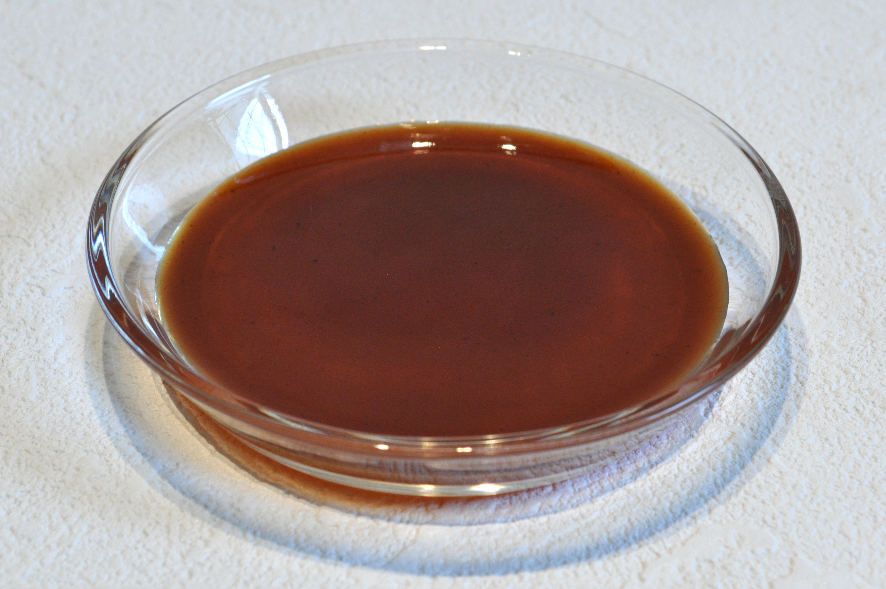

Sugar-free Worcestershire Sauce

Description
Sugar-free homemade version of a popular condiment. Recipe adapted from Food.com
Ingredients
- 1/2 cup apple cider vinegar
- 2 tablespoons low sodium soy sauce
- 2 tablespoons water
- 1 tablespoon Lakanto Monkfruit Sweetener (or another 1:1 sugar substitute)
- 1/4 teaspoon ground ginger
- 1/4 teaspoon mustard powder
- 1/4 teaspoon onion powder
- 1/4 teaspoon garlic powder
- 1/8 teaspoon black pepper
Steps
- Place all ingredients in a medium saucepan and stir thoroughly. Bring to a boil, stirring constantly. Simmer 1 minute. Cool.
- Store in the refrigerator
Back home